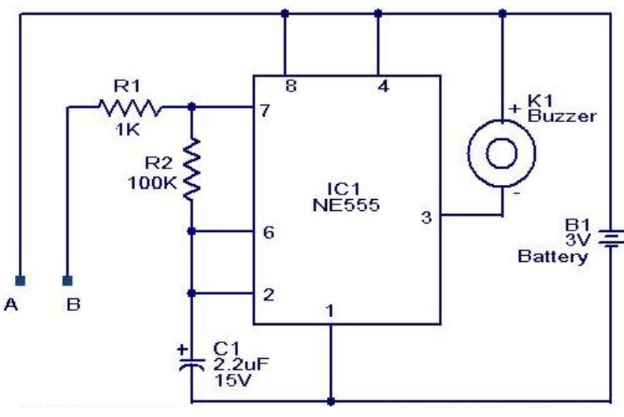

Processing and Rolling Out Updates...
Funded Projects

Two Factor Biometric Stylus for Alternative Nationwide Identity Verification
Aman Shrivastava, Snahal Kumar, Dr. Haneet Kour, Apurva Mahajan, Dr. Rakesh Jha
Integrated the ID809 fingerprint sensor with a microcontroller within a stylus device to
simultaneously capture fingerprint images and handwritten signature inputs on a graphic display
tablet, enabling a robust Two-Factor Biometric Authentication System.

Two Factor Biometric Authenticator Application
Aman Shrivastava, Snahal Kumar, Dr. Haneet Kour, Apurva Mahajan, Dr. Rakesh Jha
Designed and developed a desktop application for two-factor biometric authentication using fingerprint
and handwritten signature verification. The application was built using Processing (Python mode) for the
front-end and standard Python for the back-end, communicating via socket programming. Fingerprint
verification was implemented using the K-Nearest Neighbors (KNN) algorithm, while handwritten signature
matching was achieved through Structural Similarity Index (SSIM) analysis to ensure accurate identity
validation.

eSignature: Handwritten Signature Acquisition Application
Aman Shrivastava, Snahal Kumar, Dr. Haneet Kour, Apurva Mahajan, Dr. Rakesh Jha
Designed and developed “eSignature,” a signature acquisition tool built using Processing (Python mode) to
capture handwritten signatures via display tablets, enabling seamless integration into digital
authentication systems.

Fingerprint Imaging Software Technology
Aman Shrivastava, Snahal Kumar, Dr. Haneet Kour, Apurva Mahajan, Dr. Rakesh Jha
Designed and developed a cross-platform desktop application using Processing (Python mode) for the
front-end and Python for the back-end, communicating via socket programming. The software facilitates
serial communication between the desktop application and a biometric stylus to control the ID809
capacitive fingerprint sensor’s I/O functions. It provides full or restricted access to GET-SET
parameters, enabling fingerprint template extraction and fingerprint image acquisition.
Major Projects

Coaxial Air-to-Surface Missile for National Security
Aman Shrivastava, Kaustubh Vidhate
Currently engaged in development. Detailed information is confidential and not disclosed.
iThink: An Electroencephalography-based Brain Computer Interface
Aman Shrivastava, Dr. Varun Tiwari
Radio Controlled Quadcopter for Engaging Air-to-Surface Missile
Aman Shrivastava, Kaustubh Vidhate
Engineered a radio-controlled quadcopter capable of supporting an air-to-surface missile payload,
featuring stabilization controls and remote operation to ensure precision in target engagement.
The system includes flight control algorithms and communication protocols essential for secure
and reliable deployment.
High School Projects
Eyelink: A low-cost Electrooculography-based Human-Computer Interface
Aman Shrivastava
Designed and implemented Eyelink, a low-cost wearable headgear incorporating EOG biosensors to
capture eye movement signals. The system translates these signals into commands for
controlling various computer applications, providing a communication aid for individuals
with severe motor disabilities.
AudioOptic: A Computer Vision-based Wearable Visual Aid for Visually Challenged
Aman Shrivastava, Archit Patil
Designed and implemented AudioOptic, a wearable visual aid integrating multiple optical sensors and
processors on headgear. Utilizing parallel computing and advanced visual processing algorithms,
the device provides real-time detection and recognition of environmental elements, converting
them into speech outputs to assist visually challenged individuals in navigation and daily activities.
MedAssist: An Automated Medicine Dispenser
Aman Shrivastava, Dr. Varun Tiwari
Designed and implemented MedAssist, an automated medicine dispensing system connected via a
Zigbee wireless network. The system ensures accurate scheduling and delivery of medications,
enhancing patient compliance and reducing manual errors, suitable for both home and hospital environments.
Unmanned Ground Vehicle with Vision for Remote Security and Surveillance
Aman Shrivastava, Atharva Tapas, Kshitij Sule
Implemented a semi-autonomous unmanned ground vehicle featuring continuous tracks for enhanced
mobility and a six degrees of freedom robotic arm for manipulation tasks. The system
incorporates a vision module for real-time monitoring and remote security operations
Dataglove for Sign Language to Speech Conversion
Aman Shrivastava
Developed a 3D-printed dataglove equipped with custom copper flex sensors to accurately detect
finger articulation corresponding to sign language. The data is processed by a single-board
computer running a text-to-speech engine, enabling real-time translation of sign language
gestures into spoken words to assist communication for the hearing impaired.
Touch-less Scrolling based on Limb Electromyography
Aman Shrivastava
Designed and implemented a wearable wristband that captures forearm EMG signals and finger
movement data to facilitate touch-less scrolling and interaction with desktop applications.
The system processes muscle activity to translate user intent into control commands.
Touch Tracking for Paper using Velostat
Aman Shrivastava
Crafted an innovative touch-sensitive trackpad using Velostat sandwiched within a copper
tape matrix arranged in rows and columns on paper. This setup allows detection of touch
location through pressure-sensitive changes, facilitating control of computer
applications via laptop or desktop interfaces.
Unmanned Underwater Vehicle for Aqua Robotics Challenges
Aman Shrivastava
Developed a robust underwater vehicle using PVC pipe framing and high-density foam for structural
integrity and buoyancy. The vehicle’s movement and functions are manually controlled through
DPDT switches, suitable for basic underwater exploration and aquatic robotics challenges.
Wireless Unmanned Surface Vehicle for Aqua Robotic Challenges
Aman Shrivastava
Developed a Bluetooth-enabled unmanned surface vehicle featuring a robotic arm with four
degrees of freedom for enhanced manipulation capabilities. The system enables remote control
and precise operations suited for challenges in aqua robotics (water surface).
M3: Multipurpose Multi-project Motherboard
Aman Shrivastava
Constructed a multipurpose motherboard by integrating general-purpose ICs, voltage regulators,
control switches, and status indicators onto a perfboard using berg strip layers. The M3 board
serves as a flexible hardware foundation to accelerate development of various DIY electronics and
robotics projects.
Wireless Brain Wave Robot
Aman Shrivastava
Developed a four-wheeled Bluetooth robot controlled via the OpenBCI Focus Widget, leveraging real-time
brain wave monitoring (alpha and theta bands) to interpret user focus levels and translate them
into movement commands for robot navigation.
Automated Irrigation System for Households
Aman Shrivastava
Implemented a moisture sensor-based plant monitoring system integrated with an Arduino.
The system automatically activates irrigation when soil moisture falls below a predefined
threshold, optimizing water usage and ensuring healthy plant growth.
RFID Attendance System for Schools
Aman Shrivastava
Implemented an RFID-based attendance system using the EM18 reader interfaced with an Arduino.
The system incorporates an Ethernet shield to connect to a LAN, allowing seamless logging and
management of attendance records in a school network environment.
SONAR System for Car Collision Avoidance
Aman Shrivastava
Integrated SONAR sensors into a prototype car platform and implemented a navigation system using an A
rduino microcontroller. The system processes sensor data to detect obstacles and autonomously
avoid collisions during movement.
Voice Controlled Home Automation
Aman Shrivastava
Implemented a home automation system where voice commands captured on a mobile device are
transmitted over Bluetooth to an Arduino microcontroller, enabling wireless control of
household appliances and devices.
Elementary School Projects
BlueBot: Laptop Controlled Robot over Bluetooth
Aman Shrivastava
Implemented a four-wheeled robotic platform controlled wirelessly over Bluetooth, with the
Arduino microcontroller interpreting alphabet key presses from a laptop to navigate and operate
the robot in real time.
CellBot: Mobile Controlled Robot over Bluetooth
Aman Shrivastava
Implemented a four-wheeled robotic platform controlled wirelessly through Bluetooth.
The Arduino microcontroller receives commands from the BlueTerm mobile app, enabling
real-time remote control and maneuverability.
InfraBot: IR Remote Controlled Robot
Aman Shrivastava
Implemented a four-wheeled robot platform controlled by an IR remote. The Arduino
microcontroller processes signals received by the TSOP IR sensor to drive motors, enabling
remote maneuvering and operation.
Wireless Ultrasonic Distance Measurement Instrument
Aman Shrivastava
Implemented an ultrasonic sensor-based distance measurement system that wirelessly transmits distance data via a
433 MHz RF transceiver to receiver unit. The receiver processes and displays the calculated distance,
enabling remote monitoring and measurement applications.
PhotonFollower: IR-based Light follower Robot
Aman Shrivastava
Implemented an autonomous two-wheeled robot equipped with LDR sensors to sense ambient
light intensity. The ATmega16 microcontroller processes sensor data to control the motors,
enabling the robot to follow light sources effectively.
ObstacleRover: IR-based Object Avoidance Robot
Aman Shrivastava
Implemented an autonomous two-wheeled robot equipped with IR sensors for real-time obstacle detection.
The ATmega16 microcontroller processes sensor inputs to control motor actions, enabling the robot
to avoid collisions and navigate safely.
ClapBot: Sound Activated Robot
Aman Shrivastava
Implemented a two-wheeled robotic platform that responds to sound inputs captured by a microphone.
The ATmega16 microcontroller processes the audio signals to drive motors and control navigation based on detected sound commands.
PathSeeker: IR-based Line Follower Robot
Aman Shrivastava
Implemented a two-wheeled autonomous robot equipped with multiple IR sensors to detect and follow lines,
with control and processing managed by an ATmega16 microcontroller to ensure accurate path tracking
and obstacle response.
TetherBot: 2x2 Matrix Keypad Controlled Wired Robot
Aman Shrivastava
Implemented a two-wheeled robotic platform using the ATmega16 MCU, where control commands are input
through a 2x2 matrix keypad, allowing precise wired control over the robot’s navigation and
functionality.
IC NE555 Vibration Alarm
Aman Shrivastava
Integrated a piezoelectric sensor as the vibration detection element, which feeds signals to the
NE555 timer IC configured to activate an alarm when vibrations are sensed, suitable for security
and monitoring applications.
CMOS IC 4011 Touch Activated Switch
Aman Shrivastava
Utilized the CMOS IC 4011 NAND gates wired as a flip-flop circuit to create a touch-sensitive switch,
allowing users to toggle electrical devices through simple touch input.
Op-amp IC741 Darkness Activated Switch
Aman Shrivastava
Utilized an LDR to detect low light conditions and an op-amp IC 741 as a comparator to trigger
switching operations, providing automatic control based on darkness levels.
Voltage Comparator IC LM311 Light Activated Switch
Aman Shrivastava
Incorporated an LDR to sense ambient light levels and interfaced it with the LM311 comparator IC
to compare voltage thresholds, enabling automatic switching of devices in response to changes in
light intensity.
Shadow Detector Alarm
Aman Shrivastava
Utilized the BC337 transistor to amplify the signal from a light-dependent sensor, interfaced with
the NE555 timer IC configured to activate an alarm when a shadow is detected or when daylight intensity
reaches a certain threshold.
Decade Counter IC 4033 7 Segment Counter Display
Aman Shrivastava
Utilized the NE555 timer IC in astable mode to provide clock signals to the CD4033 decade counter IC,
which converts the counted pulses into outputs that drive a one-digit seven-segment display,
enabling numeric count visualization in real time.
Decade Counter IC 4017 and Timer IC NE555 LED Chaser
Aman Shrivastava
Configured the NE555 timer IC in astable mode to generate continuous clock pulses that drive
the CD4017 decade counter IC, which sequentially switches multiple LEDs ON and OFF to produce
a running light effect commonly used in display and decorative applications.
Decade Counter IC 4017 and Timer IC NE555 Traffic Lights
Aman Shrivastava
Utilized the NE555 timer IC configured as an astable multivibrator to provide clock pulses to
the CD4017 decade counter IC, which drives the traffic lights by activating outputs sequentially
to simulate real-world traffic signal operation.
Decade Counter IC CD 4017 Sound‑Controlled Toggle Switch
Aman Shrivastava
Designed and implemented a sound-activated toggle switch circuit using an electret microphone,
amplifier stage, and CD4017 decade counter IC. The system responds to sound impulses—such as hand
claps—to toggle a connected load ON or OFF.
DR25 Germanium Diode Fire Alarm
Aman Shrivastava
Utilized the NE555 timer IC to generate an alarm signal when triggered, with the DR25 germanium
diode serving as a sensor or signal conditioning element in the fire detection circuit.
IC UM3561 Multi-Tone Siren Generator
Aman Shrivastava
Integrated the UM3561 multi-tone siren generator IC to create a versatile alarm circuit that produces
distinct siren sounds. The project demonstrates the use of pre-programmed tone sequences for effective
auditory signaling in security and emergency applications.
IC UM66 Melody Generator
Aman Shrivastava
Integrated the UM66 melody IC into a sound generation circuit to produce musical tones, commonly
used in devices like calling bells, phones, and toys. The circuit demonstrates audio signal
amplification and tone output using minimal external components.
Timer IC NE555 LDR Darkness Sensor
Aman Shrivastava
Utilized an LDR to detect ambient light levels and interfaced it with a 555 timer IC in astable
configuration to generate a pulsed output that triggers an alarm in low-light conditions.
Op-Amp IC LM741 LDR Light Sensor
Aman Shrivastava
Incorporated a light-dependent resistor (LDR) with an op-amp IC 741 configured as a comparator
to activate an alarm when ambient light crosses a defined threshold.
Timer IC NE555 Fading LED
Aman Shrivastava
Integrated a fading LED circuit by configuring the NE555 timer IC to produce a variable duty cycle
PWM signal, enabling gradual brightness transitions in the LED.
Timer IC NE555 Flashing LED
Aman Shrivastava
Designed and implemented an LED flasher circuit using the NE555 timer IC configured in
astable mode to generate a continuous blinking effect.
Binary-Coded Decimal to 7 Segment LED Display
Aman Shrivastava
Integrated a digital display circuit that converts Binary-Coded Decimal (BCD) inputs into
corresponding numeric outputs on a seven-segment LED display using the CD4511 decoder/driver IC
Timer IC NE555 Twilight Switch
Aman Shrivastava
Incorporated a light-dependent resistor (LDR) with the NE555 timer IC to create a responsive
twilight switch that automatically controls lighting based on surrounding illumination.

Timer IC NE555 Water Level Alarm
Aman Shrivastava
Designed and integrated a water level indicator alarm circuit using the NE555 timer IC configured
in astable mode to generate periodic alerts based on water level detection.